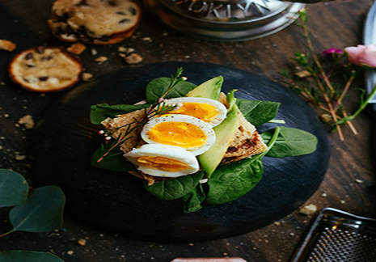
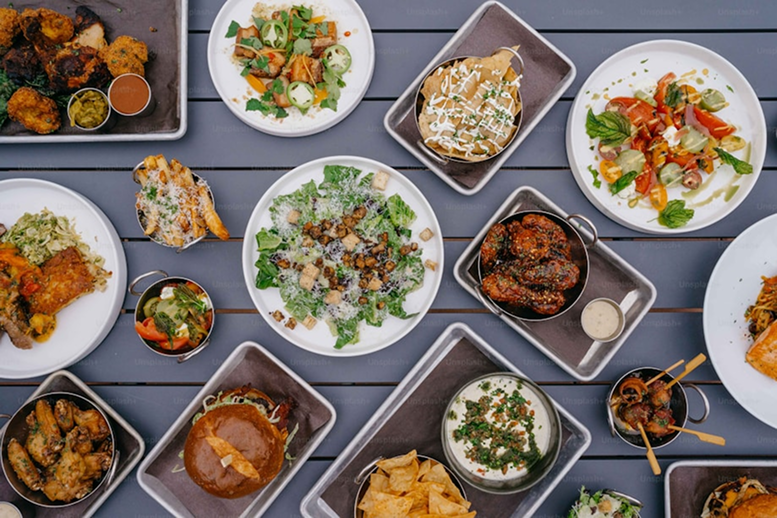
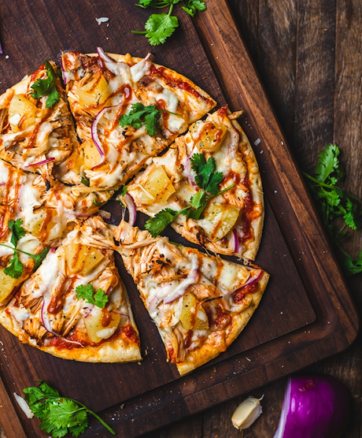

BRAND STORY
品牌故事
我們相信料理是一種細膩的表達。從食材挑選到烹調細節，皆承載對風味與品質的堅持。
以季節為靈感，融合職人精神，為每位賓客呈現值得細細品味的餐桌體驗。
2008
靈感起點
年輕的林承翰在法國學習料理期間，開始思考「台灣味」的世界語言。
他發現，台灣的食材與風土不輸給任何地方，只是少了一種被重新詮釋的語彙。
這份思考成為「宴 YÀN」的原點。
2010
起於山海的採集旅程
主廚從台灣東海岸啟程，走訪山林與海岸，尋訪小農與職人。
他重新梳理季節食材與傳統技法的脈絡，記錄每一種香氣與火候背後的故事。
「宴 YÀN」的理念於此萌芽——讓台灣味，回歸土地本身的節奏。
2013
在地研究廚房
成立「台味研究小組」，收集各家家鄉菜譜與古老製法，從麻油雞到豆豉魚。
這段時期是「味覺考古」的起點。
2015
廚房實驗室的誕生
為了尋找台味的新語言，主廚建立「風味實驗室」。
以發酵、煙燻、低溫烹調等技法，
將傳統家常味轉譯為現代餐桌上的藝術。
每一次實驗，都是在探索「記憶中的味道」如何被重新定義。
2020
宴 Yàn 台北開幕
第一間「宴 Yàn」於台北靜巷中誕生。
空間設計融合半透明玻璃、深木質與銅金細節，
在柔光間營造靜謐的都會宴席氛圍。
這裡不只是餐廳，而是一場從視覺、氣味到味覺的全感官體驗。
2022
米其林入選與國際交流
「宴 Yàn」入選米其林指南，並受邀前往東京與巴黎進行料理交流。
透過跨國食材對話，讓更多人看見「台灣味的現代演繹」。
2024
土地共作計畫
啟動與花蓮、雲林、台東小農的共作計畫，
推動永續種植與食材共生，從產地實踐餐桌倫理。
每道料理，都是土地與人的連結，也是持續成長的文化旅程。


